本篇主要内容便是介绍HashMap的男二号——TreeNode（男一号还是给Node吧，毕竟是TreeNode的爷爷，而且普通节点一般来说也比TreeNode要多），本篇主要从以下几个方面介绍：
1.红黑树介绍
2.TreeNode结构
3.树化的过程
4.红黑树的左旋和右旋
5.TreeNode的左旋和右旋
6.红黑树的插入
7.TreeNode的插入
8.红黑树的删除
9.TreeNode的删除
讲解红黑树的部分算是理论部分，讲解TreeNode的部分则是代码实践部分，配合服用效果更加。
红黑树介绍
什么是红黑树？嗯，首先，它是一颗树，所谓的树，便是长的像这样的东西
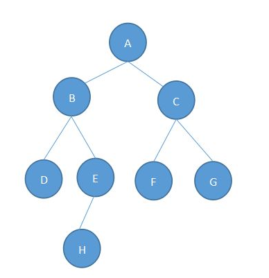
不像树？emmmm，你把它想象成一颗倒过来的树就好了，A~H都是树的节点，每个节点有零个或者多个子节点，或者说多个孩子，但除了根节点以外，每个节点都只有一个父节点，也称只有一个父亲（老王嘿嘿一笑）。最上面的A是根节点，最下面的D、H、F、G是叶子节点。每一个非根节点有且只有一个父节点；树是具有一层一层的层次结构，这里A位于第一层，B、C位于第二层，依次类推。将左边的B节点部分（包括BDEH）拿出来，则又是一颗树，称为树的子树。
好了，知道树是什么东西了，那么红黑树是什么样的呢？
红黑树，本质上来说是一颗二叉搜索树。嗯，还是先说说这个二叉搜索树吧。二叉代表它的节点最多有两个子节点，而且左右有顺序，不能颠倒，分别叫左孩子和右孩子，这两个节点互为兄弟节点，嗯，其实叫法根现实里的叫法差不多，以下图为例，4、9互为兄弟，7是他们的父亲，9是2的叔叔，8是2的堂兄弟，很简单吧。说完了称谓，再来说说用途，既然叫做搜索树表示它的用途是为了更快的搜索和查找而设计的，所以这棵树本身满足一定的排序规则，即树中的任何节点的值大于它的左孩子，且小于它的右孩子。 任意节点的左、右子树也分别为二叉查找树。嗯，结合下图意会一下：
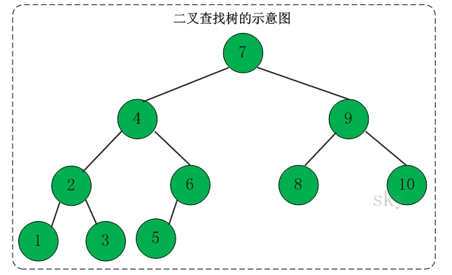
而红黑树，就跟它的名字一样，又红又黑，红黑并进，理实交融，节点是非红即黑的，看起来就像这样:
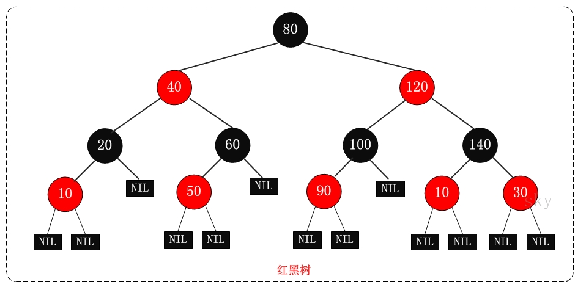
红黑树的主要特性:
（1）每个节点要么是黑色，要么是红色。（节点非黑即红）
（2）根节点是黑色。
（3）每个叶子节点（NIL）是黑色。
（4）如果一个节点是红色的，则它的子节点必须是黑色的。（也就是说父子节点不能同时为红色）
（5）从一个节点到该节点的子孙节点的所有路径上包含相同数目的黑节点。（这一点是平衡的关键）
说简单也简单，其实就是一颗比较平衡的又红又黑的二叉树嘛。
TreeNode结构
既然我们已经知道红黑树长什么样了，那么我们再来看看HashMap中的TreeNode代码里是如何表示的：
/**
* 用于Tree bins 的Entry。 扩展LinkedHashMap.Entry（进而扩展Node），因此可以用作常规节点或链接节点的扩展。
*/
static final class TreeNode<K,V> extends LinkedHashMap.Entry<K,V> {
TreeNode<K,V> parent; // 红黑树父节点
TreeNode<K,V> left;
TreeNode<K,V> right;
TreeNode<K,V> prev; // 删除后需要取消链接
boolean red;
TreeNode(int hash, K key, V val, Node<K,V> next) {
super(hash, key, val, next);
} //省略后续代码
TreeNode继承自LinkedHashMap中的内部类——LinkedHashMap.Entry，而这个内部类又继承自Node，所以算是Node的孙子辈了。我们再来看看它的几个属性，parent用来指向它的父节点，left指向左孩子，right指向右孩子，prev则指向前一个节点（原链表中的前一个节点），注意，这些字段跟Entry，Node中的字段一样，是使用默认访问权限的，所以子类可以直接使用父类的属性。
*0*|***1***树化的过程
在前几篇中已经有所介绍，当HashMap桶中的元素个数超过一定数量时，就会树化，也就是将链表转化为红黑树的结构。
public V put(K key, V value) {
return putVal(hash(key), key, value, false, true);
}
final V putVal(int hash, K key, V value, boolean onlyIfAbsent,
boolean evict) {
...省略部分代码...
else {
for (int binCount = 0; ; ++binCount) {
if ((e = p.next) == null) {
p.next = newNode(hash, key, value, null);
//当桶中元素个数超过阈值（8）时就进行树化
if (binCount >= TREEIFY_THRESHOLD - 1)
treeifyBin(tab, hash);
break;
}
...省略部分代码...
}
final void treeifyBin(Node<K,V>[] tab, int hash) {
int n, index; Node<K,V> e;
if (tab == null || (n = tab.length) < MIN_TREEIFY_CAPACITY)
resize();
else if ((e = tab[index = (n - 1) & hash]) != null) {
TreeNode<K,V> hd = null, tl = null;
do {
//将节点替换为TreeNode
TreeNode<K,V> p = replacementTreeNode(e, null);
if (tl == null) //hd指向头结点
hd = p;
else {
//这里其实是将单链表转化成了双向链表，tl是p的前驱，每次循环更新指向双链表的最后一个元素，用来和p相连，p是当前节点
p.prev = tl;
tl.next = p;
}
tl = p;
} while ((e = e.next) != null);
if ((tab[index] = hd) != null)
//将链表进行树化
hd.treeify(tab);
}
}
从代码中可以看到，在treeifyBin函数中，先将所有节点替换为TreeNode，然后再将单链表转为双链表，方便之后的遍历和移动操作。而最终的操作，实际上是调用TreeNode的方法treeify进行的。
final void treeify(Node<K,V>[] tab) {
//树的根节点
TreeNode<K,V> root = null;
//x是当前节点，next是后继
for (TreeNode<K,V> x = this, next; x != null; x = next) {
next = (TreeNode<K,V>)x.next;
x.left = x.right = null;
//如果根节点为null，把当前节点设置为根节点
if (root == null) {
x.parent = null;
x.red = false;
root = x;
}
else {
K k = x.key;
int h = x.hash;
Class<?> kc = null;
//这里循环遍历，进行二叉搜索树的插入
for (TreeNode<K,V> p = root;;) {
//p指向遍历中的当前节点，x为待插入节点，k是x的key，h是x的hash值，ph是p的hash值，dir用来指示x节点与p的比较，-1表示比p小，1表示比p大，不存在相等情况，因为HashMap中是不存在两个key完全一致的情况。
int dir, ph;
K pk = p.key;
if ((ph = p.hash) > h)
dir = -1;
else if (ph < h)
dir = 1;
//如果hash值相等，那么判断k是否实现了comparable接口，如果实现了comparable接口就使用compareTo进行进行比较，如果仍旧相等或者没有实现comparable接口，则在tieBreakOrder中比较
else if ((kc == null &&
(kc = comparableClassFor(k)) == null) ||
(dir = compareComparables(kc, k, pk)) == 0)
dir = tieBreakOrder(k, pk);
TreeNode<K,V> xp = p;
if ((p = (dir <= 0) ? p.left : p.right) == null) {
x.parent = xp;
if (dir <= 0)
xp.left = x;
else
xp.right = x; //进行插入平衡处理
root = balanceInsertion(root, x);
break;
}
}
}
} //确保给定节点是桶中的第一个元素
moveRootToFront(tab, root);
}
//这里不是为了整体排序，而是为了在插入中保持一致的顺序
static int tieBreakOrder(Object a, Object b) {
int d;
//用两者的类名进行比较，如果相同则使用对象默认的hashcode进行比较
if (a == null || b == null ||
(d = a.getClass().getName().
compareTo(b.getClass().getName())) == 0)
d = (System.identityHashCode(a) <= System.identityHashCode(b) ?
-1 : 1);
return d;
}
这里的逻辑其实不复杂，仅仅是循环遍历当前树，然后找到可以该节点可以插入的位置，依次和遍历节点比较，比它大则跟其右孩子比较，小则与其左孩子比较，依次遍历，直到找到左孩子或者右孩子为null的位置进行插入。
真正复杂一点的地方在于balanceInsertion函数，这个函数中，将红黑树进行插入平衡处理，保证插入节点后仍保持红黑树的性质。这个函数稍后在TreeNode的插入中进行介绍，这里先看看moveRootToFront，这个函数是将root节点移动到桶中的第一个元素，也就是链表的首节点，这样做是因为在判断桶中元素类型的时候会对链表进行遍历，将根节点移动到链表前端可以确保类型判断时不会出现错误。
/**
* 把给定节点设为桶中的第一个元素
*/
static <K,V> void moveRootToFront(Node<K,V>[] tab, TreeNode<K,V> root) {
int n;
if (root != null && tab != null && (n = tab.length) > 0) {
int index = (n - 1) & root.hash;
//first指向链表第一个节点
TreeNode<K,V> first = (TreeNode<K,V>)tab[index];
if (root != first) {
//如果root不是第一个节点，则将root放到第一个首节点位置
Node<K,V> rn;
tab[index] = root;
TreeNode<K,V> rp = root.prev;
if ((rn = root.next) != null)
((TreeNode<K,V>)rn).prev = rp;
if (rp != null)
rp.next = rn;
if (first != null)
first.prev = root;
root.next = first;
root.prev = null;
}
//这里是防御性编程，校验更改后的结构是否满足红黑树和双链表的特性
//因为HashMap并没有做并发安全处理，可能在并发场景中意外破坏了结构
assert checkInvariants(root);
}
}
*0*|***1***红黑树的左旋和右旋
左旋和右旋，顾名思义嘛，就是将节点以某个节点为中心向左或者向右进行旋转操作以保持二叉树的平衡，让我们看图说话:
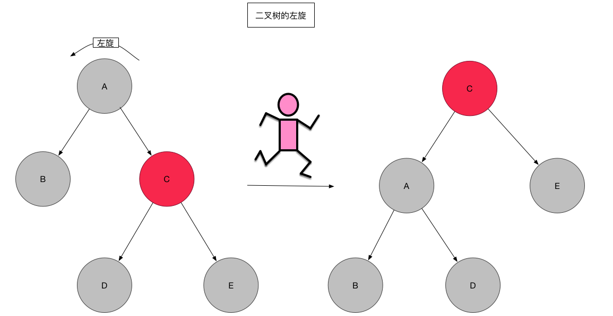
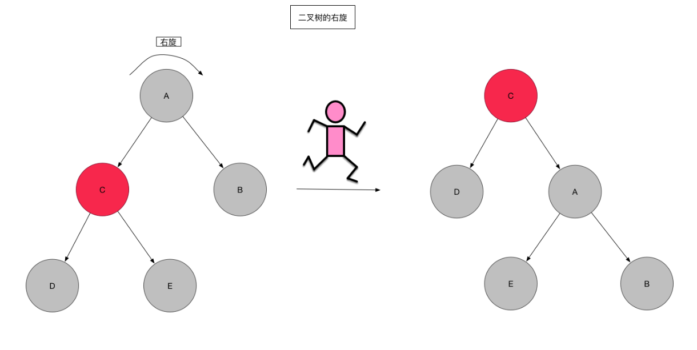
图画的有点大。将就着看一下吧，左旋相当于以要旋转的节点为中心，将子树整体向左旋转，该节点变成子树的根节点，原来的父节点A变成了左孩子，如果右孩子C有左孩子D，则将其变为A的右孩子。说起来好像有点绕，可以联系图进行形象化的理解，当节点A向左旋转之后，C的左孩子D可以理解为因为重力作用掉到A的右孩子位置，嗯，就是这样。右旋也是类似理解即可。
TreeNode的左旋和右旋
了解了左旋和右旋，让我们看看代码里是怎样实现的：
/**
* 左旋
*/
static <K,V> TreeNode<K,V> rotateLeft(TreeNode<K,V> root,
TreeNode<K,V> p) {
//这里的p即上图的A节点，r指向右孩子即C，rl指向右孩子的左孩子即D，pp为p的父节点
TreeNode<K,V> r, pp, rl;
if (p != null && (r = p.right) != null) {
if ((rl = p.right = r.left) != null)
rl.parent = p;
//将p的父节点的孩子节点指向r
if ((pp = r.parent = p.parent) == null)
(root = r).red = false;
else if (pp.left == p)
pp.left = r;
else
pp.right = r;
//将p置为r的左节点
r.left = p;
p.parent = r;
}
return root;
}
/**
* 右旋
*/
static <K,V> TreeNode<K,V> rotateRight(TreeNode<K,V> root,
TreeNode<K,V> p) {
//这里的p即上图的A节点，l指向左孩子即C，lr指向左孩子的右孩子即E，pp为p的父节点
TreeNode<K,V> l, pp, lr;
if (p != null && (l = p.left) != null) {
if ((lr = p.left = l.right) != null)
lr.parent = p;
if ((pp = l.parent = p.parent) == null)
(root = l).red = false;
else if (pp.right == p)
pp.right = l;
else
pp.left = l;
l.right = p;
p.parent = l;
}
return root;
}
其实，也很简单嘛。23333
红黑树的插入
现在来看看一个比较麻烦一点的操作，红黑树的插入，首先找到这个节点要插入的位置，即一层一层比较，大的放右边，小的放左边，直到找到为null的节点放入即可，但是如何在插入的过程保持红黑树的特性呢，想想好像比较头疼，但是再仔细想想其实就会发现，其实只有这么几种情况：
1.插入的为根节点，则直接把颜色改成黑色即可。
2.插入的节点的父节点是黑色节点，则不需要调整，因为插入的节点会初始化为红色节点，红色节点是不会影响树的平衡的。
3.插入的节点的祖父节点为null，即插入的节点的父节点是根节点，直接插入即可（因为根节点肯定是黑色）。
4.插入的节点父节点和祖父节点都存在，并且其父节点是祖父节点的左节点。这种情况稍微麻烦一点，又分两种子情况：
i.插入节点的叔叔节点是红色，则将父亲节点和叔叔节点都改成黑色，然后祖父节点改成红色即可。
ii.插入节点的叔叔节点是黑色或不存在：
a.若插入节点是其父节点的右孩子，则将其父节点左旋，
b.若为左孩子，则将其父节点变成黑色节点，将其祖父节点变成红色节点，然后将其祖父节点右旋。
5.插入的节点父节点和祖父节点都存在，并且其父节点是祖父节点的右节点。这种情况跟上面是类似的，分两种子情况：
i.插入节点的叔叔节点是红色，则将父亲节点和叔叔节点都改成黑色，然后祖父节点改成红色即可。
ii.插入节点的叔叔节点是黑色或不存在：
a.若插入节点是其父节点的左孩子，则将其父节点右旋
b.若为右孩子，则将其父节点变成黑色节点，将其祖父节点变成红色节点，然后将其祖父节点左旋。
然后重复进行上述操作，直到变成1或2情况时则结束变换。说半天，可能还是云里雾里，一图胜千言，让我们从无到有构建一颗红黑树，假设插入的顺序为：10，5，9，3，6，7，19，32，24，17（数字是我拍脑袋瞎想的。）
先来插个10，为情景1，直接改成黑色即可，再插入5，为情景2，比10小，放到10的左孩子位置，插入9，比10小，但是比5大，放到5的右孩子位置，此时，为情景4iia，左旋后变成了情景4iib，变色右旋即可完成转化。插入3后为情景4i，将父节点和叔叔节点同时变色即可，插入6不需要调整，插入7后为情景5i，变色即可。插入19不需要调整，插入32，变成了5iib，左旋变色即可，插入24，变成5iia，右旋后变成5i，变色即可，最后插入17，完美。
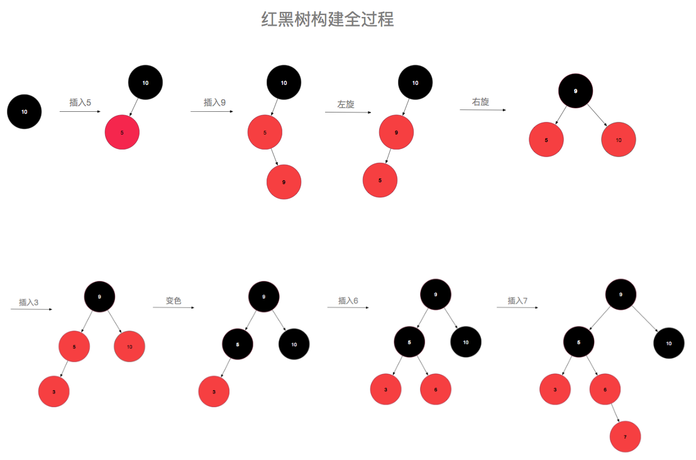
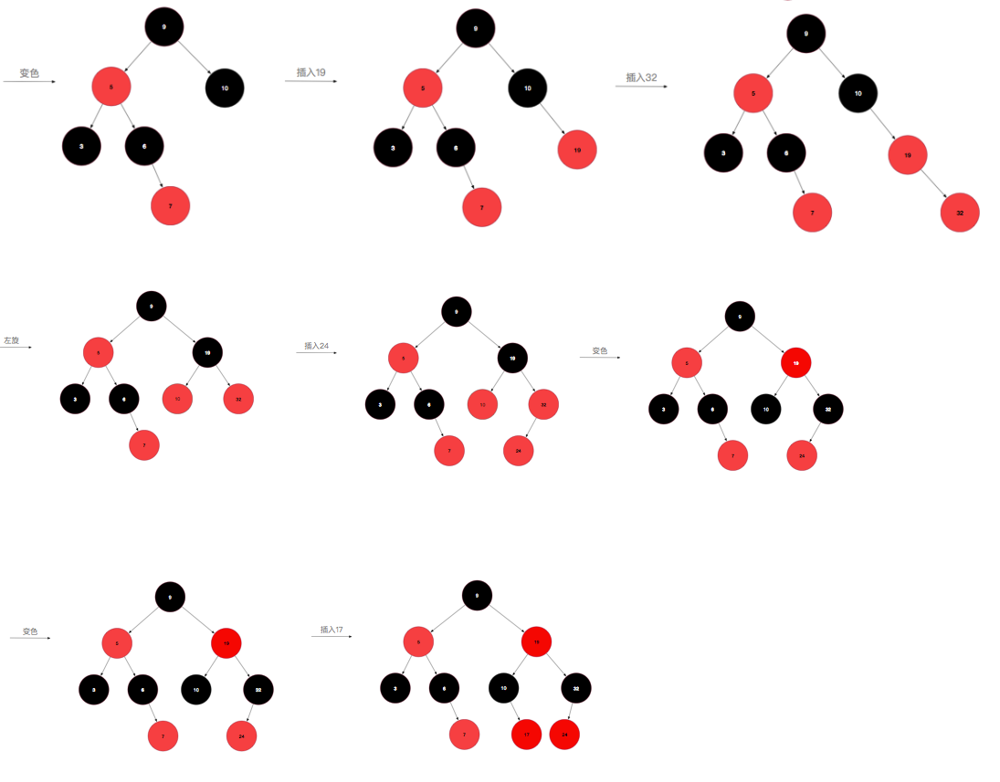
看图说话是不是就简单明了了.
TreeNode的插入
了解了红黑树的删除之后，我们再来看下TreeNode中是怎样用代码实现的：
static <K,V> TreeNode<K,V> balanceInsertion(TreeNode<K,V> root,
TreeNode<K,V> x) {
x.red = true;
for (TreeNode<K,V> xp, xpp, xppl, xppr;;) { //情景1：父节点为null
if ((xp = x.parent) == null) {
x.red = false;
return x;
} //情景2，3：父节点是黑色节点或者祖父节点为null
else if (!xp.red || (xpp = xp.parent) == null)
return root; //情景4：插入的节点父节点和祖父节点都存在，并且其父节点是祖父节点的左节点
if (xp == (xppl = xpp.left)) { //情景4i：插入节点的叔叔节点是红色
if ((xppr = xpp.right) != null && xppr.red) {
xppr.red = false;
xp.red = false;
xpp.red = true;
x = xpp;
} //情景4ii：插入节点的叔叔节点是黑色或不存在
else { //情景4iia：插入节点是其父节点的右孩子
if (x == xp.right) {
root = rotateLeft(root, x = xp);
xpp = (xp = x.parent) == null ? null : xp.parent;
} //情景4iib：插入节点是其父节点的左孩子
if (xp != null) {
xp.red = false;
if (xpp != null) {
xpp.red = true;
root = rotateRight(root, xpp);
}
}
}
} //情景5：插入的节点父节点和祖父节点都存在，并且其父节点是祖父节点的右节点
else { //情景5i：插入节点的叔叔节点是红色
if (xppl != null && xppl.red) {
xppl.red = false;
xp.red = false;
xpp.red = true;
x = xpp;
} //情景5ii：插入节点的叔叔节点是黑色或不存在
else {· //情景5iia：插入节点是其父节点的左孩子
if (x == xp.left) {
root = rotateRight(root, x = xp);
xpp = (xp = x.parent) == null ? null : xp.parent;
} //情景5iib：插入节点是其父节点的右孩子
if (xp != null) {
xp.red = false;
if (xpp != null) {
xpp.red = true;
root = rotateLeft(root, xpp);
}
}
}
}
}
}
其实就是一毛一样的，对号入座即可。
红黑树的删除
讲完插入，接下来我们来说说删除，删除的话，比插入还要复杂一点，请各位看官先深呼吸，做好阅读准备。
之前已经说过，红黑树是一颗特殊的二叉搜索树，所以进行删除操作时，其实是先进行二叉搜索树的删除，然后再进行调整。所以，其实这里分为两部分内容：1.二叉搜索树的删除，2.红黑树的删除调整。
二叉搜索树的删除主要有这么几种情景：
情景1：待删除的节点无左右孩子。
情景2：待删除的节点只有左孩子或者右孩子。
情景3：待删除的节点既有左孩子又有右孩子。
对于情景1，直接删除即可，情景2，则直接把该节点的父节点指向它的左孩子或者右孩子即可，情景3稍微复杂一点，需要先找到其右子树的最左孩子（或者左子树的最右孩子），即左（右）子树中序遍历时的第一个节点，然后将其与待删除的节点互换，最后再删除该节点（如果有右子树，则右子树上位）。总之，就是先找到它的替代者，找到之后替换这个要删除的节点，然后再把这个节点真正删除掉。
其实二叉搜索树的删除总体来说还是比较简单的，删除完之后，如果替代者是红色节点，则不需要调整，如果是黑色节点，则会导致左子树和右子树路径中黑色节点数量不一致，需要进行红黑树的调整，跟上面一样，替代节点为其父节点的左孩子与右孩子的情况类似，所以这里只说其为左孩子的情景（PS:上一步的寻找替换节点使用的是右子树的最左节点，所以该节点如果有孩子，只能是右孩子）：
情景1：只有右孩子且为红色，直接用右孩子替换该节点然后变成黑色即可。
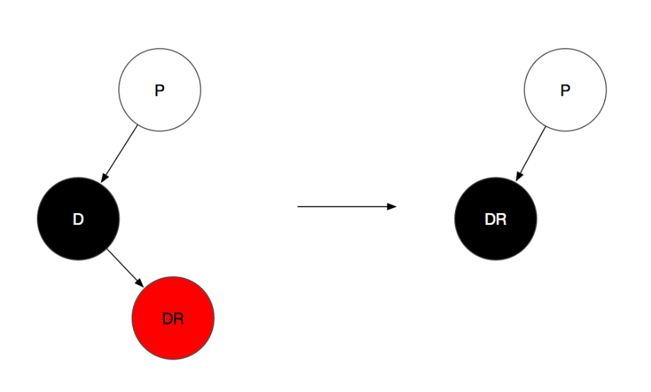
（D代表替代节点，即要被删除的节点，之前在经过二叉搜索树的删除后，D节点其实已经被删除了，这里为了方便理解这个变化过程，所以把这个节点也画出来了，所以当前的初始状态是待删除节点与其替换节点互换位置与颜色之后的状态）
情景2：只有右孩子且为黑色，那么删除该节点会导致父节点的左子树路径上黑色节点减一，此时只能去借助右子树，从右子树中借一个红色节点过来即可，具体取决于右子树的情况，这里又分成两种：
i.兄弟节点是红色，则此时父节点是黑色，且兄弟节点肯定有两个孩子，且兄弟节点的左右子树路径上均有两个黑色节点，此时只需将兄弟节点与父节点颜色互换，然后将父节点左旋，左旋后，兄弟节点的左子树SL挂到了父节点p的右孩子位置，这时会导致p的右子树路径上的黑色节点比左子树多一，此时再SL置为红色即可。
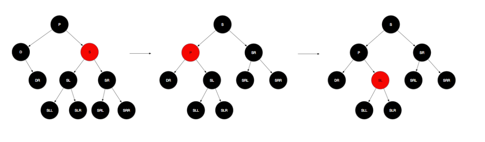
ii.兄弟节点是黑色，那么就只能打它孩子的主意了，这里主要关注远侄子（兄弟节点的右孩子，即SR）的颜色情况，这里分成两种情况：
a.远侄子SR是黑色，近侄子任意（白色代表颜色可为任意颜色），则先将S转为红色，然后右旋，再将SL换成P节点颜色，P涂成黑色，S也涂成黑色，再进行左旋即可。其实简单说就是SL上位，替换父节点位置。
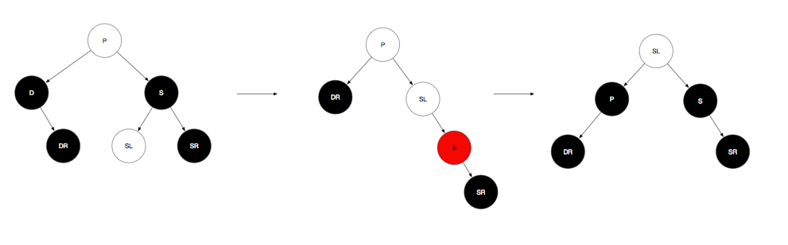
b.远侄子SR为红色，近侄子任意（该子树路径中有且仅有一个黑色节点），则先将兄弟节点与父节点颜色互换，将SR涂成黑色，再将父节点左旋即可。
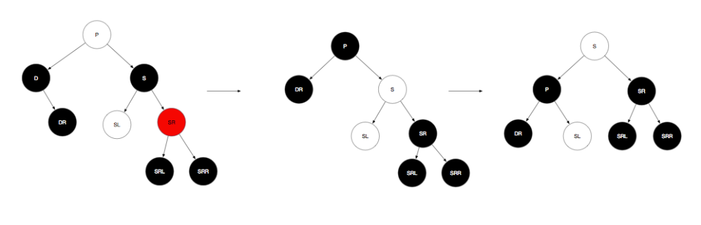
emmmm…好像也不是很麻烦嘛（逃）。
TreeNode的删除节点
TreeNode删除节点其实也是两步走，先进行二叉搜索树的删除，然后再进行红黑树的调整，跟之前的情况分析是一致的。
final void removeTreeNode(HashMap<K,V> map, Node<K,V>[] tab, boolean movable) {
......
//p是待删除节点，replacement用于后续的红黑树调整，指向的是p或者p的继承者。
//如果p是叶子节点，p==replacement，否则replacement为p的右子树中最左节点
if (replacement != p) {
//若p不是叶子节点，则让replacement的父节点指向p的父节点
TreeNode<K,V> pp = replacement.parent = p.parent;
if (pp == null)
root = replacement;
else if (p == pp.left)
pp.left = replacement;
else
pp.right = replacement;
p.left = p.right = p.parent = null;
}
//若待删除的节点p时红色的，则树平衡未被破坏，无需进行调整。
//否则删除节点后需要进行调整
TreeNode<K,V> r = p.red ? root : balanceDeletion(root, replacement);
//p为叶子节点，则直接将p从树中清除
if (replacement == p) { // detach
TreeNode<K,V> pp = p.parent;
p.parent = null;
if (pp != null) {
if (p == pp.left)
pp.left = null;
else if (p == pp.right)
pp.right = null;
}
}
}
麻烦的地方就在删除节点后的调整了，所有逻辑都在balanceDeletion函数里，两个参数分别表示根节点和删除节点的继承者，来看看它的具体实现：
static <K,V> TreeNode<K,V> balanceDeletion(TreeNode<K,V> root, TreeNode<K,V> x) {
for (TreeNode<K,V> xp, xpl, xpr;;) {
//x为空或x为根节点，直接返回
if (x == null || x == root)
return root;
//x为根节点，染成黑色，直接返回（因为调整过后，root并不一定指向删除操作过后的根节点，如果之前删除的是root节点，则x将成为新的根节点）
else if ((xp = x.parent) == null) {
x.red = false;
return x;
}
//如果x为红色，则无需调整，返回
else if (x.red) {
x.red = false;
return root;
}
//x为其父节点的左孩子
else if ((xpl = xp.left) == x) {
//如果它有红色的兄弟节点xpr，那么它的父亲节点xp一定是黑色节点
if ((xpr = xp.right) != null && xpr.red) {
xpr.red = false;
xp.red = true;
//对父节点xp做左旋转
root = rotateLeft(root, xp);
//重新将xp指向x的父节点，xpr指向xp新的右孩子
xpr = (xp = x.parent) == null ? null : xp.right;
}
//如果xpr为空，则向上继续调整，将x的父节点xp作为新的x继续循环
if (xpr == null)
x = xp;
else {
//sl和sr分别为其近侄子和远侄子
TreeNode<K,V> sl = xpr.left, sr = xpr.right;
if ((sr == null || !sr.red) &&
(sl == null || !sl.red)) {
xpr.red = true; //若sl和sr都为黑色或者不存在，即xpr没有红色孩子，则将xpr染红
x = xp; //本轮结束，继续向上循环
}
else {
//否则的话，就需要进一步调整
if (sr == null || !sr.red) {
if (sl != null) //若左孩子为红，右孩子不存在或为黑
sl.red = false; //左孩子染黑
xpr.red = true; //将xpr染红
root = rotateRight(root, xpr); //右旋
xpr = (xp = x.parent) == null ?
null : xp.right; //右旋后，xpr指向xp的新右孩子，即上一步中的sl
}
if (xpr != null) {
xpr.red = (xp == null) ? false : xp.red; //xpr染成跟父节点一致的颜色，为后面父节点xp的左旋做准备
if ((sr = xpr.right) != null)
sr.red = false; //xpr新的右孩子染黑，防止出现两个红色相连
}
if (xp != null) {
xp.red = false; //将xp染黑，并对其左旋，这样就能保证被删除的X所在的路径又多了一个黑色节点，从而达到恢复平衡的目的
root = rotateLeft(root, xp);
}
//到此调整已经完毕，进入下一次循环后将直接退出
x = root;
}
}
}
//x为其父节点的右孩子，跟上面类似
else { // symmetric
if (xpl != null && xpl.red) {
xpl.red = false;
xp.red = true;
root = rotateRight(root, xp);
xpl = (xp = x.parent) == null ? null : xp.left;
}
if (xpl == null)
x = xp;
else {
TreeNode<K,V> sl = xpl.left, sr = xpl.right;
if ((sl == null || !sl.red) &&
(sr == null || !sr.red)) {
xpl.red = true;
x = xp;
}
else {
if (sl == null || !sl.red) {
if (sr != null)
sr.red = false;
xpl.red = true;
root = rotateLeft(root, xpl);
xpl = (xp = x.parent) == null ?
null : xp.left;
}
if (xpl != null) {
xpl.red = (xp == null) ? false : xp.red;
if ((sl = xpl.left) != null)
sl.red = false;
}
if (xp != null) {
xp.red = false;
root = rotateRight(root, xp);
}
x = root;
}
}
}
}
}
呼。。。终于。。酝酿了好多天的一篇文章总算是写完了，为了尽量确认转换的准确性，找了很多资料进行参考，过程中花了不少时间，曾多次准备放弃。。。不过总算是没有死在娘胎里，也算是完成了一桩心事，开心。